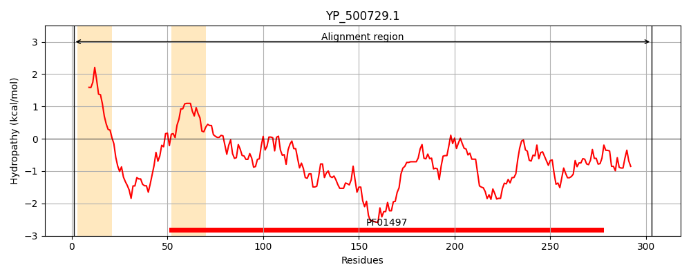
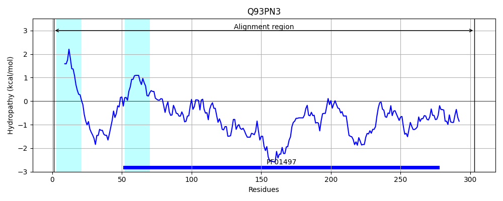
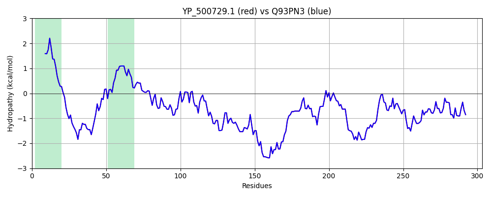

Hit Accession: Q93PN3
Hit TCID: 3.A.1.14.7
Hit Description: gnl|BL_ORD_ID|17336 gnl|TC-DB|Q93PN3|3.A.1.14.7 Ferric hydroxamate receptor 1 - Staphylococcus aureus, and Staphylococcus aureus (strain MW2).
Mach Len: 303
e:0.000000
Query TMS Count : 2
Hit TMS Count: 2
TMS-Overlap Score: 1.900000
Predicted Substrates:CHEBI:28163;iron(III) hydroxamate
BLAST Alignment:
Score: 1588 , Bit scores: 616 bits, E-value: 0.0e+00, Alignment length: 303, Percentage identity: 100
Query: 1 MKRLIGILLCNLFILTACSASVDKTSNSTKTTDYKIENGETLKVPEKPKRVAVLTGFYVGDFIKLGIKPIAVSDITKDSSILKPYLKGVDYIGENDVERVAKAKPDLIVVDAMDKNIKKYQKIAPTIPYTYNKYNHKEILKEIGKLTNNEDKAKKWIEEWDDKTRKDKKEIQSKIGQATASVFEPDEKQIYIYNSTWGRGLDIVHDAFGMPMTKQYKDKLQEDKKGYASISKENISKYAGDYIFLSKPSYGKFDFEKTHTWQNIEAVKKGHVISYKAEDYWFTDPITLEHLRSKLKKEILNKK 303
MKRLIGILLCNLFILTACSASVDKTSNSTKTTDYKIENGETLKVPEKPKRVAVLTGFYVGDFIKLGIKPIAVSDITKDSSILKPYLKGVDYIGENDVERVAKAKPDLIVVDAMDKNIKKYQKIAPTIPYTYNKYNHKEILKEIGKLTNNEDKAKKWIEEWDDKTRKDKKEIQSKIGQATASVFEPDEKQIYIYNSTWGRGLDIVHDAFGMPMTKQYKDKLQEDKKGYASISKENISKYAGDYIFLSKPSYGKFDFEKTHTWQNIEAVKKGHVISYKAEDYWFTDPITLEHLRSKLKKEILNKK
Sbjct: 1 MKRLIGILLCNLFILTACSASVDKTSNSTKTTDYKIENGETLKVPEKPKRVAVLTGFYVGDFIKLGIKPIAVSDITKDSSILKPYLKGVDYIGENDVERVAKAKPDLIVVDAMDKNIKKYQKIAPTIPYTYNKYNHKEILKEIGKLTNNEDKAKKWIEEWDDKTRKDKKEIQSKIGQATASVFEPDEKQIYIYNSTWGRGLDIVHDAFGMPMTKQYKDKLQEDKKGYASISKENISKYAGDYIFLSKPSYGKFDFEKTHTWQNIEAVKKGHVISYKAEDYWFTDPITLEHLRSKLKKEILNKK 303 | Protein Hydropathy Plots: |
|---|
|  |  |
Pairwise Alignment-Hydropathy Plot:
|
|---|
|  |